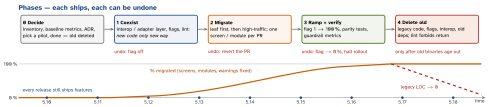

engineering · folio
In one line: A large migration (UIKit → SwiftUI, RN Old → New Architecture, Swift 5 → 6) succeeds when old and new coexist behind an adapter or interop layer, new code is written only the new way from day one, the work moves in small shippable steps (each behind a flag or per module, each with a rollback), progress and health are measured, and it ends by deleting the old path. Feature delivery never stops; a months-long rewrite branch is the failure mode.
Download PDF Print view LaTeX source


How it works
- Stop the bleeding first: a lint rule / code-review rule that new code uses only the new way, or the migration target keeps moving.
- Coexistence layer: something that lets old and new run in one binary — a hosting controller, RN’s interop layers, per-module Swift language mode, a protocol with two implementations (branch by abstraction). The layer is temporary: it is deleted in phase 4.
- Order: a low-risk leaf to learn and write the playbook, then by value and risk; not the hardest screen first, not “alphabetical”. Parity first, redesign later (two hats).
- Rollback per step: runtime flag > revert > new build. On mobile old binaries live for months — keep the old path in the binary until the new one is proven, and the server compatible with both.
- Metrics: progress (% screens/modules, legacy imports, compiler warnings) · health (crash-free users, hangs, startup, app size, build time) · delivery (features still shipping). A public burndown keeps it funded; a playbook + codemods make the new way the easy way.
Case 1 — UIKit → SwiftUI, screen by screen
- UIKit keeps the shell and navigation (coordinators); each migrated screen is a SwiftUI view in a
UIHostingController. SwiftUI reports intent through closures — it never gets theUINavigationController. - List cells:
UIHostingConfiguration(iOS 16) inside the existingUICollectionView. The other way round:UIViewRepresentablefor UIKit-only pieces (a text view, a map). - Shared state: one
@Observablemodel (iOS 17) orObservableObjectread by both sides. - Order: settings/about → all new features → busy lists last; replace navigation with
NavigationStacklast, or never. Snapshot tests prove visual parity.
final class ProfileCoordinator {
let nav: UINavigationController
func showProfile(_ user: User) {
let model = ProfileModel(user: user) // @Observable
let view = ProfileView(model: model,
onEdit: { [weak self] in self?.showEdit(user) })
let vc = UIHostingController(rootView: view)
vc.title = user.name
nav.pushViewController(vc, animated: true)
}
}
// a SwiftUI row in an existing UIKit list (iOS 16+)
cell.contentConfiguration = UIHostingConfiguration { RowView(item: item) }Remember
“Coexist, stop the bleeding, ship small reversible steps, measure — then delete the old.”
Case 2 — React Native Old → New Architecture
- Facts: interop layers since RN 0.74 let many old-architecture libraries run unchanged; New Architecture is the default from Expo SDK 52; RN 0.82 runs only the New Architecture (
newArchEnabled=falseis ignored); 0.81 / Expo SDK 54 are the last versions that can still turn it off; SDK 55+ always on. - Path (one variable at a time): upgrade to 0.81 / SDK 54 with the old architecture still on → audit native deps (
npx expo-doctoragainst React Native Directory; replace unmaintained ones) → enable the New Architecture on 0.81 → test native modules, custom views, layout, timing → ship with a staged rollout → only then go to 0.82+. - Your own native code: Codegen specs → TurboModules / Fabric components; the interop layer carries legacy modules meanwhile, but that is a bridge, not a destination.
- Rollback: architecture is a build setting, not a runtime flag — halt the rollout and ship the previous branch; keep it buildable until the new build is proven.
Case 3 — Swift 5 → Swift 6 language mode
- The language mode is per module; a Swift 6 compiler builds Swift 5-mode and Swift 6-mode modules side by side, so migrate target by target.
- Per module: in Swift 5 mode turn on complete concurrency checking and the upcoming features one at a time (warnings, builds stay green) → fix → switch that target to Swift 6 (
SWIFT_VERSION = 6or.swiftLanguageMode(.v6)). The guide suggests starting from the outer-most root module.@preconcurrency importfor unmigrated dependencies. - Metric: concurrency warnings per module, burned down. Each
@unchecked Sendableis logged debt.
Traps
- A long-lived “v2” branch: merge hell, nothing ships, the old code keeps changing under it.
- Migrating and redesigning in the same step — no parity baseline, no clean rollback.
- No phase 4: two systems forever (a “lava layer”), double the upkeep.
- Treating the RN architecture switch as a runtime flag — it is a build.